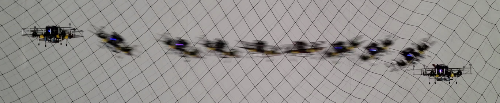

Alexander Spitzer, Xuning Yang, John Yao, Aditya Dhawale, Kshitij Goel, Mosam Dabhi, Matt Collins, Curtis Boirum, Nathan Michael
Presented at the International Symposium on Experimental Robotics (ISER) 2018


I'm a Ph.D. student at Carnegie Mellon University advised by Nathan Michael and working with RISLAB. Prior, I graduated from Cornell University with a double major in Computer Science (CS) and Electrical and Computer Engineering (ECE).
My work combines statistical techniques, control theory, and systems engineering to enable robots to solve practical problems.
Inverting Learned Dynamics Models for Aggressive Multirotor Control
Alexander Spitzer and Nathan Michael
Presented at Robotics: Science and Systems (RSS) 2019

Fast and Agile Vision-Based Flight with Teleoperation and Collision Avoidance on a Multirotor
Alexander Spitzer, Xuning Yang, John Yao, Aditya Dhawale, Kshitij Goel, Mosam Dabhi, Matt Collins, Curtis Boirum, Nathan Michael
Presented at the International Symposium on Experimental Robotics (ISER) 2018